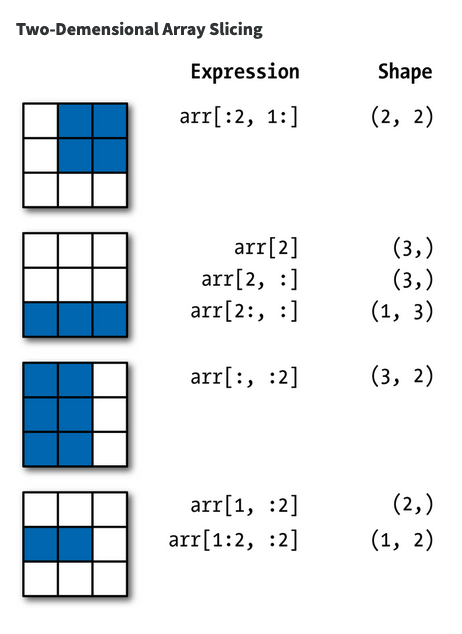

import numpy as npM06 Notes
New Edition of Pandas Book
There is a new edition of the book we are using for NumPy and Pandas:
Shout to Daniel Stornetta!
NumPy Slices

def inspect(a):
print('Structure:')
print(a)
print('Shape:', a.shape, 'Axes:', len(a.shape))a1 = np.random.randn(3,3)inspect(a1)Structure:
[[ 0.94189714 0.25292708 -0.53694544]
[-0.38919961 -1.06228332 -0.57043245]
[-0.07302494 -2.18720499 -1.47706283]]
Shape: (3, 3) Axes: 2inspect(a1[2])Structure:
[-0.60758386 -2.84371596 1.15749854]
Shape: (3,) Axes: 1inspect(a1[[2]])Structure:
[[-0.60758386 -2.84371596 1.15749854]]
Shape: (1, 3) Axes: 2inspect(a1[2, :])Structure:
[-0.60758386 -2.84371596 1.15749854]
Shape: (3,) Axes: 1inspect(a1[2:])Structure:
[[-0.60758386 -2.84371596 1.15749854]]
Shape: (1, 3) Axes: 2inspect(a1[[2], :])Structure:
[[-0.60758386 -2.84371596 1.15749854]]
Shape: (1, 3) Axes: 2inspect(a1[2:, :])Structure:
[[-0.60758386 -2.84371596 1.15749854]]
Shape: (1, 3) Axes: 2inspect(a1[2, 2])Structure:
1.1574985440672065
Shape: () Axes: 0inspect(a1[2, [2]])Structure:
[1.15749854]
Shape: (1,) Axes: 1inspect(a1[[2], 2])Structure:
[1.15749854]
Shape: (1,) Axes: 1inspect(a1[[2], [2]])Structure:
[1.15749854]
Shape: (1,) Axes: 1inspect(a1[2:, 2:])Structure:
[[1.15749854]]
Shape: (1, 1) Axes: 2inspect(a1[:, 2])Structure:
[-2.23444565 0.09570946 1.15749854]
Shape: (3,) Axes: 1inspect(a1[:, [2]])Structure:
[[-2.23444565]
[ 0.09570946]
[ 1.15749854]]
Shape: (3, 1) Axes: 2inspect(a1[:, 1:])Structure:
[[ 0.68627847 -2.23444565]
[ 0.61797039 0.09570946]
[-2.84371596 1.15749854]]
Shape: (3, 2) Axes: 2Pandas
- Pandas assumes a 2D world.
- Use Xarray for more dimensions …
- Pandas is lingua franca
Pandas Indexing
import pandas as pd-1
ser = pd.Series(np.arange(3.))ser0 0.0
1 1.0
2 2.0
dtype: float64# ser[-1] # Throws an errorser2 = pd.Series(np.arange(3.), index=['a', 'b', 'c'])ser2a 0.0
b 1.0
c 2.0
dtype: float64ser2[-1]2.0Why?
In the first case, -1 is interpreted as an index name.
Arithmetic
Series operations work with indexes implicitly.
s1 = pd.Series([7.3, -2.5, 3.4, 1.5], index=['a', 'c', 'd', 'e'])
s2 = pd.Series([-2.1, 3.6, -1.5, 4, 3.1], index=['a', 'c', 'e', 'f', 'g'])s1a 7.3
c -2.5
d 3.4
e 1.5
dtype: float64s2a -2.1
c 3.6
e -1.5
f 4.0
g 3.1
dtype: float64s1 + s2a 5.2
c 1.1
d NaN
e 0.0
f NaN
g NaN
dtype: float64Dataframes
df1 = pd.DataFrame(np.arange(9.).reshape((3, 3)), columns=list('bcd'), index=['Ohio', 'Texas', 'Colorado'])
df2 = pd.DataFrame(np.arange(12.).reshape((4, 3)), columns=list('bde'), index=['Utah', 'Ohio', 'Texas', 'Oregon'])df1| b | c | d | |
|---|---|---|---|
| Ohio | 0.0 | 1.0 | 2.0 |
| Texas | 3.0 | 4.0 | 5.0 |
| Colorado | 6.0 | 7.0 | 8.0 |
df2| b | d | e | |
|---|---|---|---|
| Utah | 0.0 | 1.0 | 2.0 |
| Ohio | 3.0 | 4.0 | 5.0 |
| Texas | 6.0 | 7.0 | 8.0 |
| Oregon | 9.0 | 10.0 | 11.0 |
df1 + df2| b | c | d | e | |
|---|---|---|---|---|
| Colorado | NaN | NaN | NaN | NaN |
| Ohio | 3.0 | NaN | 6.0 | NaN |
| Oregon | NaN | NaN | NaN | NaN |
| Texas | 9.0 | NaN | 12.0 | NaN |
| Utah | NaN | NaN | NaN | NaN |
(df1 + df2).fillna(0).style.background_gradient(axis=None, cmap='YlGnBu')| b | c | d | e | |
|---|---|---|---|---|
| Colorado | 0.000000 | 0.000000 | 0.000000 | 0.000000 |
| Ohio | 3.000000 | 0.000000 | 6.000000 | 0.000000 |
| Oregon | 0.000000 | 0.000000 | 0.000000 | 0.000000 |
| Texas | 9.000000 | 0.000000 | 12.000000 | 0.000000 |
| Utah | 0.000000 | 0.000000 | 0.000000 | 0.000000 |
Anatomy of a Data Frame


import seaborn as sns# sns.get_dataset_names()data_set = 'iris'
# data_set = 'penguins'
df = sns.load_dataset(data_set)
df.index.name = 'obs_id'# df = pd.read_csv("iris_data.csv").set_index('obs_id')df.groupby('species').agg(['mean', 'median', 'count'])| sepal_length | sepal_width | petal_length | petal_width | |||||||||
|---|---|---|---|---|---|---|---|---|---|---|---|---|
| mean | median | count | mean | median | count | mean | median | count | mean | median | count | |
| species | ||||||||||||
| setosa | 5.006 | 5.0 | 50 | 3.428 | 3.4 | 50 | 1.462 | 1.50 | 50 | 0.246 | 0.2 | 50 |
| versicolor | 5.936 | 5.9 | 50 | 2.770 | 2.8 | 50 | 4.260 | 4.35 | 50 | 1.326 | 1.3 | 50 |
| virginica | 6.588 | 6.5 | 50 | 2.974 | 3.0 | 50 | 5.552 | 5.55 | 50 | 2.026 | 2.0 | 50 |
df['species'].value_counts().to_frame('n')| n | |
|---|---|
| species | |
| setosa | 50 |
| versicolor | 50 |
| virginica | 50 |
# df.values